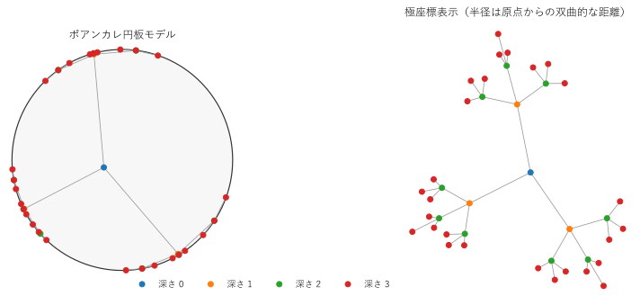
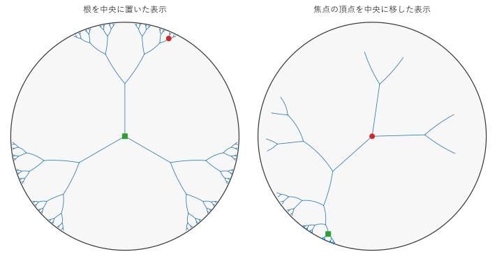
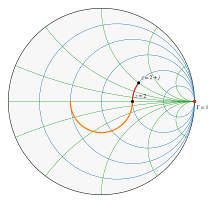

第 9 章 工学・情報科学への応用
この章では、双曲幾何学が工学と情報科学に現れる例を 5 つ紹介する。前半の 3 つ（双曲埋め込み、複雑ネットワーク、情報可視化）は、第 7 章で見た「指数的な広がり」と「木構造との相性」を利用する。後半の 2 つ（特殊相対論、スミスチャート）は、物理や電気回路の中に、もともと双曲平面のモデルが隠れている例である。各節は考え方の紹介にとどめるので、詳しくは参考文献（付録 D）を参照してほしい。
双曲埋め込み
機械学習では、単語や商品などの対象をベクトル（空間の点）で表し、意味の近いものを近い点に置く「埋め込み」がよく使われる。対象の間に「動物 ⊃ 哺乳類 ⊃ 犬」のような階層構造があるとき、ユークリッド空間への埋め込みでは、階層の深い部分で点の置き場所が足りなくなり、高い次元が必要になる。
Nickel と Kiela（2017 年）は、ユークリッド空間の代わりに円板モデル（高次元では球体モデル）を使う双曲埋め込み（Poincaré embeddings）を提案した。双曲空間は指数関数的に広がるので、木構造を低い次元でゆがみ少なく埋め込める（第 7 章）。学習の要点は次のとおりである。
損失関数：祖先と子孫の組 \((u, v)\) ごとに、\(u\) から \(v\) への双曲距離が、\(u\) と無関係な点 \(v'\) への距離より小さくなるように、ソフトマックス型の損失 \(-\log \left( e^{-d(u, v)} / \sum_{v'} e^{-d(u, v')} \right)\) を最小化する。
リーマン勾配法：円板モデルの計量は \(ds = 2|dx| / (1 - |x|^2)\) なので、ユークリッドの勾配に \((1 - |x|^2)^2 / 4\) を掛けたものが、双曲空間での最急降下の向き（リーマン勾配）になる。境界の近くでは、同じユークリッドの移動でも双曲的には大きく動くので、更新量を小さくするのである。
射影：更新で円板の外に出た点は、境界のすぐ内側に戻す。
この方法を、根から 3 本ずつ枝分かれする深さ 3 の木（頂点 40 個）に適用した例が図 13である。初期位置は原点のごく近くにランダムに置いた。
99def train(related: BoolArray, epochs: int = 300, rate: float = 0.05, seed: int = 0) -> FloatArray:
100 """リーマン勾配法で点の位置を学習する.
101
102 円板の計量は ds = 2 |dx| / (1 - |x|^2) なので、ユークリッドの勾配に (1 - |x|^2)^2 / 4 を掛けると
103 リーマン多様体としての勾配になる。最初の 100 回は学習率を小さくして全体の配置を落ち着かせる。
104 """
105 rng = np.random.default_rng(seed)
106 x = rng.uniform(-1e-3, 1e-3, size=(related.shape[0], 2))
107 for epoch in range(epochs):
108 _, grad = loss_and_grad(x, related)
109 lr = rate / 10.0 if epoch < 100 else rate
110 scale = (1.0 - np.sum(x**2, axis=1, keepdims=True)) ** 2 / 4.0
111 x = x - lr * scale * grad
112 norm = np.linalg.norm(x, axis=1, keepdims=True)
113 x = np.where(norm >= 1.0 - EPS, x / norm * (1.0 - EPS), x) # 円板の外に出た点を内側に戻す
114 return x


図 13 木を円板モデルに埋め込んだ結果。左は円板モデル、右は原点からの双曲距離を半径とする極座標表示
頂点の数 40、近いはずの組の数 204
損失 学習前 581.02 -> 学習後 69.41
深さ 0 の頂点の、原点からの距離の平均 0.365
深さ 1 の頂点の、原点からの距離の平均 5.379
深さ 2 の頂点の、原点からの距離の平均 7.396
深さ 3 の頂点の、原点からの距離の平均 8.525
サンプルの全体：ch09_embedding.py
学習の結果、根は円板の中心付近に、深い頂点ほど境界の近くに置かれた。円板モデルの図では、深さ 1 以降の頂点が境界に押し込められて見分けにくいので、右の図では原点からの双曲距離をそのまま半径にとって描いた。同じ親を持つ頂点がまとまり、木の構造がそのまま再現されている。データに階層構造があることを教えていないのに、「原点からの距離」が階層の深さを表すようになったことに注目してほしい。
その後、数値的に安定な双曲面モデルを使う方法（Nickel と Kiela、2018 年）や、ニューラルネットワークの層そのものを双曲空間で定義する双曲ニューラルネットワーク（Ganea ら、2018 年）なども提案されている。
複雑ネットワーク
インターネットのルーター（自律システム）の接続、ソーシャルネットワーク、論文の引用関係などのネットワークには、共通の性質が知られている。
少数のハブ（つながりの非常に多い頂点）と、多数のつながりの少ない頂点がある。頂点の次数（つながりの数）の分布が、べき分布 \(P(k) \propto k^{-\gamma}\) に近い（スケールフリー性）。
友人の友人は友人であることが多い（クラスター係数が高い）。
Krioukov ら（2010 年）は、これらの性質が、双曲平面の中にランダムに置いた点を「距離が近ければ結ぶ」だけで自然に現れることを示した。モデルは次のとおりである。
半径 \(R\) の双曲円板の中に \(N\) 個の点を置く。偏角は一様に、原点からの距離 \(r\) は密度 \(\alpha \sinh(\alpha r) / (\cosh(\alpha R) - 1)\) に従って選ぶ（\(\alpha = 1\) が双曲平面での一様分布にあたる）。
双曲距離が \(R\) より小さい 2 点を辺で結ぶ。
\(\alpha > 1/2\) のとき、次数の分布は指数 \(\gamma = 2\alpha + 1\) のべき分布に近づく。\(N = 1000\)、\(R = 12\)、\(\alpha = 0.75\) で作ったグラフが図 14である。左の図は、原点からの双曲距離を半径とする極座標で描き、点の大きさで次数を表した。右の図は、次数が \(k\) 以上の頂点の割合（相補累積分布）を両対数で描いたもので、べき分布なら傾き \(1 - \gamma\) の直線になる。

図 14 双曲平面上のランダムグラフ（左）と、次数の相補累積分布（右）
点の数 1000、辺の数 7227
平均次数 14.45、最大次数 257、次数 0 の点 7 個
次数の大きい 5 点
次数 257、原点からの距離 r = 3.81
次数 230、原点からの距離 r = 4.31
次数 210、原点からの距離 r = 4.35
次数 182、原点からの距離 r = 4.63
次数 173、原点からの距離 r = 4.75
全点の r の平均 10.56
サンプルの全体：ch09_random_graph.py
原点に近い点はほかの多くの点と距離が近く、ハブになる。原点から遠い点は、偏角の近い少数の点とだけつながる。このモデルでは、原点からの距離が「人気（どれだけ多くとつながるか）」を、偏角が「類似性（何と似ているか）」を表すと解釈できる。実際のインターネットの接続を双曲平面に埋め込み、各ルーターが「宛先に双曲距離で最も近い隣へ転送する」だけで、効率よく経路が見つかることも報告されている（Boguñá ら、2010 年）。
ツリーの可視化
ファイルシステムや組織図のような大きな木を画面に表示するとき、全体を見せると細部が小さくなりすぎ、細部を拡大すると全体が見えなくなる。Lamping、Rao、Pirolli（1995 年）は、木を円板モデルに描き、注目する部分（焦点）を中心に大きく、周辺を小さく表示するハイパボリックツリー（hyperbolic tree browser）を提案した。この手法は focus+context（焦点と文脈）と呼ばれる表示手法の代表例である。
焦点を移す操作は、円板の等長変換 \(z \mapsto (z - a) / (1 - \bar{a} z)\) （第 5 章）で行う。等長変換なので、木の辺の双曲的な長さや枝の間の角度は変わらず、表示がなめらかに移り変わる。図 15は、第 7 章の木で、根（緑）を中央に置いた表示と、根から 2 段下の頂点（赤）を中央に移した表示である。


図 15 等長変換による焦点の移動。左は根を中央に置いた表示、右は赤の頂点を中央に移した表示
サンプルの全体：ch09_focus_context.py
右の図では、焦点の近くの枝が大きく表示され、根やほかの枝は境界の近くに小さく残っている。どの部分を焦点にしても、木全体が常に円の中に収まる。
特殊相対論の速度の空間
特殊相対論では、光速 \(c\) を超える速度はなく、速度の合成は単純な足し算にならない。光速を \(c = 1\) とする単位で、同じ向きの速度 \(v_1\)、\(v_2\) の合成は
である。ここでラピディティ\(\phi = \artanh v\) を使うと、付録 Aの加法定理 \(\tanh(\phi_1 + \phi_2) = (\tanh \phi_1 + \tanh \phi_2) / (1 + \tanh \phi_1 \tanh \phi_2)\) から、ラピディティは単純な足し算 \(\phi = \phi_1 + \phi_2\) になる。
この事実は、速度の空間が双曲空間であることの 1 次元版である。平面内の運動（空間 2 次元）で考えると、速度 \(\boldsymbol{v}\) （\(|\boldsymbol{v}| < 1\)）に対して、4 元速度（ここでは成分が 3 つ）
を考えると、\(B(u, u) = \gamma^2 (1 - |\boldsymbol{v}|^2) = 1\) なので、\(u\) は双曲面モデルの点である。しかも、次のことが成り立つ。
2 つの速度の 4 元速度の双曲距離は、一方から見た他方の速さのラピディティに等しい。
慣性系を乗り換えるローレンツ変換（ブースト）は、双曲面モデルの等長変換である（第 5 章）。
\(u\) をクラインモデルに射影すると \(u / u_0 = \boldsymbol{v}\) となり、速度そのものになる。つまり、速度の全体 \(\{ |\boldsymbol{v}| < 1 \}\) はクラインモデルである。
数値で確かめる。速度 \(\boldsymbol{v} = (0.6, 0)\) の観測者から見た、速度 \(\boldsymbol{w} = (0.3, 0.7)\) の物体の速さを、ブーストの行列で直接求め、双曲距離と比べる。
25def boost(v: Vector) -> NDArray[np.float64]:
26 """速度 v で動く観測者の座標系に移るローレンツ変換（ブースト）の 3 行 3 列の行列."""
27 speed2 = float(v @ v)
28 gamma = 1.0 / math.sqrt(1.0 - speed2)
29 matrix = np.eye(3)
30 matrix[0, 0] = gamma
31 matrix[0, 1:] = matrix[1:, 0] = -gamma * v
32 matrix[1:, 1:] += (gamma - 1.0) * np.outer(v, v) / speed2
33 return matrix
一直線上の速度の合成: ラピディティ phi = artanh v は足し算になる
(v1 + v2) / (1 + v1 v2) = 0.9154929577
tanh(artanh v1 + artanh v2) = 0.9154929577
向きの異なる 2 つの速度
相対速度の大きさ = 0.7747502524
そのラピディティ artanh = 1.0321026066
4 元速度の双曲的な距離 = 1.0321026066
速度をクラインモデルの点とみた距離 = 1.0321026066
ブーストは双曲面の等長変換である
変換前の距離 0.9458218115
変換後の距離 0.9458218115
サンプルの全体：ch09_relativity.py
相対速度のラピディティ、4 元速度の双曲距離、速度をクラインモデルの点とみたときの距離が一致している。速度の空間の三角形には角欠損があり、これは異なる向きのブーストを続けて行うと回転が生じる現象（トーマス・ウィグナー回転）と関係している。
コラム：スミスチャート
高周波回路の設計で使われるスミスチャートも、双曲幾何学の目で見ることができる。
特性インピーダンス \(Z_0\) の伝送線路に負荷 \(Z\) をつなぐとき、正規化インピーダンス \(z = Z / Z_0 = r + jx\) （電気工学の慣習に従い、虚数単位を \(j\) と書く）の反射係数は
である。受動的な負荷（\(r > 0\)）は右半平面の点であり、\(\Gamma\) は右半平面を単位円板に移すメビウス変換である。右半平面は、上半平面を 90 度回したものなので、双曲平面のモデルとみなせる。このとき、スミスチャートの目盛り線は次のように解釈できる（図 16）。
抵抗 \(r\) が一定の円（青）：右半平面の境界（虚軸）に平行な直線 \(\Re z = r\) の像であり、無限遠点 \(\Gamma = 1\) を中心とするホロサイクルである。
リアクタンス \(x\) が一定の弧（緑）：境界に垂直な直線 \(\Im z = x\) の像であり、\(\Gamma = 1\) を端点とする測地線である。


図 16 スミスチャートの目盛り線と、回路素子による反射係数の動き
サンプルの全体：ch09_smith_chart.py
無損失の回路素子を加える操作は、円板の等長変換として働く。
直列リアクタンスを加える（\(z \mapsto z + jx\)）：\(\Gamma = 1\) を固定する放物型の変換であり、点は抵抗一定の円（ホロサイクル）に沿って動く。図の赤の線は、負荷 \(z = 2 + j\) に直列に \(-j\) を加えて \(z = 2\) にする動きである。
並列サセプタンスを加える：\(\Gamma = -1\) を固定する放物型の変換である。
無損失の伝送線路を通す：反射係数が \(\Gamma e^{-2j\beta l}\) に変わる、円板の中心のまわりの回転（楕円型の変換）である。図の橙の線は、\(z = 2\) の負荷から電気長 \(\beta l = \pi/2\) （4 分の 1 波長）の線路を通した動きである。
さらに、円板の中心（整合状態 \(\Gamma = 0\)）から \(\Gamma\) までの双曲距離 \(d\) は、式 (6) により \(d = \ln \left( (1 + |\Gamma|) / (1 - |\Gamma|) \right)\) であり、これは電圧定在波比 VSWR の対数そのものである。
負荷 z |Gamma| VSWR e^d
(2+0j) 0.33333 2.00000 2.00000
(0.5+0j) 0.33333 2.00000 2.00000
(1+1j) 0.44721 2.61803 2.61803
(3-2j) 0.63246 4.44152 4.44152
伝送線路による回転で VSWR が変わらないのは、回転が中心からの双曲距離を変えないからである。
この章のまとめ
双曲埋め込みは、双曲空間の指数的な広がりを利用して、階層構造を持つデータを低い次元で表す。
双曲平面上のランダムグラフは、実際のネットワークに見られるスケールフリー性を再現する。
ハイパボリックツリーは、等長変換で焦点を移しながら、大きな木を円の中に表示する。
特殊相対論の速度の空間は双曲空間であり、ローレンツ変換はその等長変換である。
スミスチャートでは、抵抗一定の円がホロサイクル、リアクタンス一定の弧が測地線であり、VSWR は中心からの双曲距離の指数関数である。